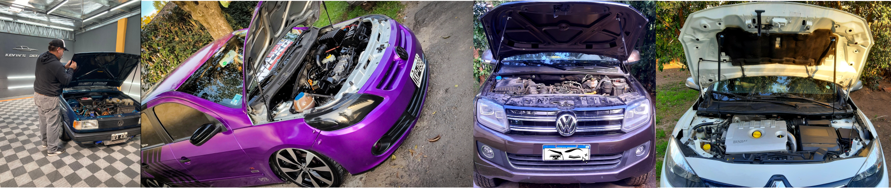

nosotros
Nuestros productos están pensados para la dinámica actual, la multifuncionalidad de la vida contemporánea, demanda la eficacia y practicidad en cada tareas cotidianas.
Aperturas neumatica para capot. Es un accesorios práctico y eficaz para realizar la apertura del capot del vehiculo, utilizando sólo un mano y rompiendo con cualquier impedimento o condiciones adversas. Ak-Pot es un accesorio de intalacion intuitiva, no invasiva, se instala por el usuario, amigable estéticamente y comprobadamente funcional.
Por todo lo antes detallado AK-Pot es un producto que todo vehículo debería tener.